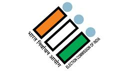

The Tamil Nadu Election 2026 is one of the most important democratic events in the state. Citizens across Tamil Nadu will vote to choose their representatives and form the next government. The election will decide the future development of the state in areas such as education, employment, healthcare, agriculture, infrastructure, technology, and social welfare.
Major political parties including Dravida Munnetra Kazhagam (DMK), All India Anna Dravida Munnetra Kazhagam (AIADMK), Bharatiya Janata Party (BJP), and Indian National Congress (Congress) are preparing to contest the election with new promises and development plans for the people of Tamil Nadu.
This website provides the latest updates about Tamil Nadu Election 2026 including party details, candidate information, election news, voting awareness, constituency updates, opinion polls, schedules, and live results. Our goal is to help citizens stay informed and understand the importance of voting in a democratic society.
Every vote plays an important role in shaping the future of Tamil Nadu. Stay connected with us for accurate election information, real-time updates, and complete coverage of Tamil Nadu Election 2026.
